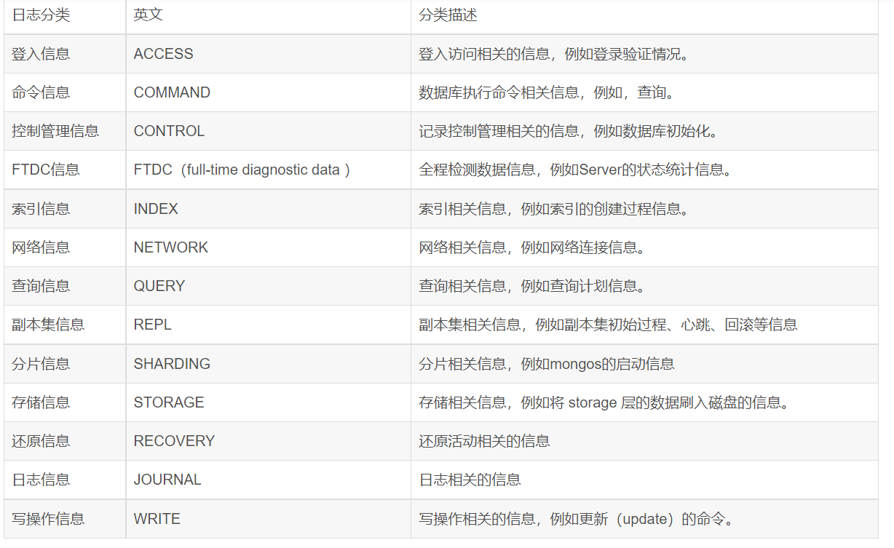

开启查询日志输出 默认mongodb不会输出所有的操作语句到日志中，google出的答案如下：
mongod --profile=1 --slowms=1 &
或
$ mongo
MongoDB shell version: 2.4.9
connecting to: test
> use myDb
switched to db myDb
> db.getProfilingLevel()
0
> db.setProfilingLevel(2)
{ "was" : 0, "slowms" : 1, "ok" : 1 }
> db.getProfilingLevel()
2
> db.system.profile.find().pretty()
db.setProfilingLevel(2)#意味着mongodb会记录所有的操作到日志中。
在上述操作完成后就可以在log文件中查看操作日志记录了： tail -f /var/log/mongodb/mongodb.log
//输出
Mon Mar 4 15:02:55 [conn1] query dendro.quads query: { graph: "u:http://example.org/people" } ntoreturn:0 ntoskip:0 nscanned:6 keyUpdates:0 locks(micros) r:73163 nreturned:6 reslen:9884 88ms
db.setProfilingLevel其实是设了mongodb内在工具profiler的日志记录级别的。 参考:https://docs.mongodb.com/manual/reference/glossary/#term-database-profiler
level有如下的取值：
0：关闭。不做分析 1：打开。只记录慢查询 2：打开。记录所有的操作
MongoDB日志组件种类及日志等级
每种数据库都有自己的日志模块，MongoDB也不例外，通常情况下，一个数据库的日志中，记录的是数据库的连接信息、存储信息、网络信息、索引信息以及查询信息等。从MongoDB3.0版本开始，MongoDB在日志中引入了日志等级和日志组件的概念，作为DBA来讲，关注的最多的应该是慢查询日志和连接日志。
在MongoDB中，我们可以通过下面的命令，来获取所有的日志组件种类和对应的日志等级：
db.getLogComponents()
PRIMARY> db.getLogComponents()
{
"verbosity" : 0,
"accessControl" : {
"verbosity" : -1
},
"command" : {
"verbosity" : -1
},
"control" : {
"verbosity" : -1
},
"executor" : {
"verbosity" : -1
},
"geo" : {
"verbosity" : -1
},
"index" : {
"verbosity" : -1
},
"network" : {
"verbosity" : -1,
"asio" : {
"verbosity" : -1
},
"bridge" : {
"verbosity" : -1
}
},
"query" : {
"verbosity" : -1
},
"replication" : {
"verbosity" : -1
},
"sharding" : {
"verbosity" : -1
},
"storage" : {
"verbosity" : -1,
"journal" : {
"verbosity" : -1
}
},
"write" : {
"verbosity" : -1
},
"ftdc" : {
"verbosity" : -1
}
}
这里，我需要对执行的结果做个说明。
首先来看返回结果中的总的verbosity，它的值是0。相应的取值还有1~5，数字越大，表示日志的详细程度越高，当这个值取到5的时候，MongoDB将会输出所有的调试debug日志，这个日志量将会非常大，一般情况下，默认的值是0.
你可以留意到，这个执行结果中，包含很多子项目，例如command，control，executer，query，replication，sharding等，这些子项目也叫作日志组件，它代表这种类型的日志，例如sharding代表分片相关的日志。每个子项目里面也有一个verbosity，它代表的是当前的组件的日志等级，它的取值和上面的verbosity取值一样，可以取0,1,2,3,4,5，不同的是，它还可以取值为-1，代表继承父日志级别。
在上面的例子中：
1、storage就是storage.joural的父级目录。
2、storage.journal的日志等级是-1，代表它继承storage的日志级别，
3、storage的日志级别也是-1，代表它继承全局的日志级别，
4、全局的日志级别是0，这就意味着：storage和storage.journal的日志级别也都是0
设置某个日志组件的日志级别
为了获取更好的可读性，有时候会对单个日志组件的日志级别输出的更清晰一点，这种情况下，可以通过下面的命令来设置某个日志组件的日志等级：
方法一：db.setLogLevel()
db.setLogLevel()
它的常用方法如下：
db.setLogLevel(<level>,<component>)
其中，level是等级，可以取值0~5，component是组件名称。可以取accessControl、command、control、ftdc、 geo、index、network、query、replication、recovery、sharding、storage、storage.journal、transaction、write等。

方法二：执行MongoDB命令
这个命令只能设置单个组件的日志等级，如果想要一次性设置多个组件的日志等级，可以使用下面的方法：
db.adminCommand( {
setParameter: 1,
logComponentVerbosity: {
verbosity: 1,
query: { verbosity: 2 },
storage: {
verbosity: 2,
journal: {
verbosity: 1
}
}
}
} )
上面例子中的方法，
将全局的日志等级设置成1；
将query的日志等级设置成2；
将storage的日志等级设置成2；
将storage.journal的日志等级设置成1； 或者 例如：将systemLog 整体设置为1，其中 query 子项 设置为2。
修改的具体命令为：
db.adminCommand( {
setParameter: 1,
logComponentVerbosity: {
verbosity: 1,
query: {
verbosity: 2
}
}
} )
恢复原级别：
db.adminCommand( {
setParameter:0,
logComponentVerbosity: {
verbosity: 0,
query: {
verbosity: -1
}
}
} )
方法三：写入配置文件
执行这个命令，等同于在配置文件中写入：
systemLog:
verbosity: 1
component:
query:
verbosity: 2
storage:
verbosity: 2
journal:
verbosity: 1
方法四：启动的时候，设置参数
除此之外，我们也可以在mongod启动的时候，通过命令设置某个日志组件的日志等级，如下：
mongod --setParameter "logComponentVerbosity={command: 3}"
日志轮换
有时候，长时间没有清理日志，日志的数据量会变的很大，这个时候我们可以通过两种方法来对日志进行滚动：
利用日志轮滚的方法，直接在MongoDB的命令行里面输入：
use admin //切换到admin数据库
db.runCommand({logRotate:1})
这种方法采用了命令来切换日志文件，不需要关闭mongodb服务，是一个比较推荐的做法。
当然，如果需要人手工的定期执行这个命令，好像也不够优雅，所以可以配合crontab去做这个事情，每天定时执行一次，达到日志文件轮滚的目的。